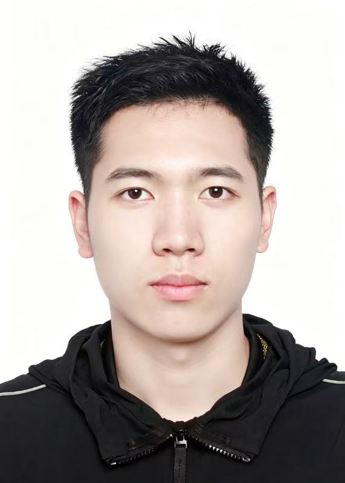
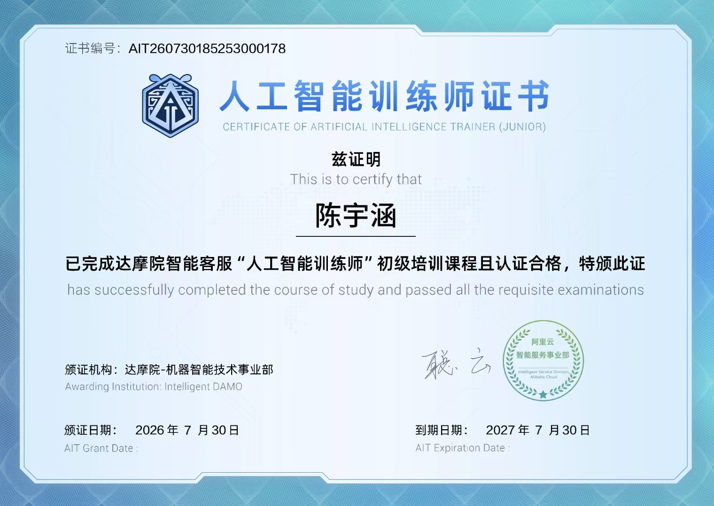
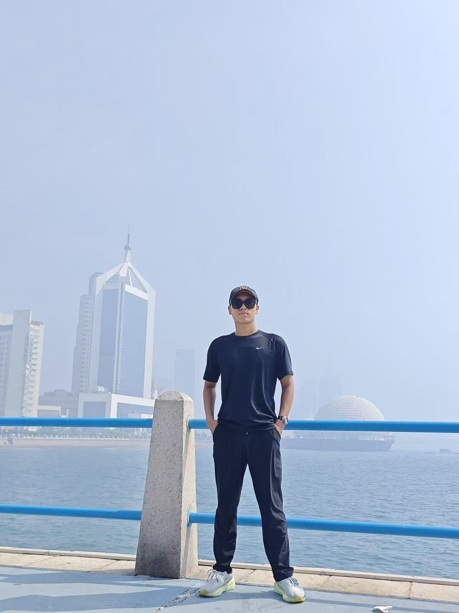

探索 AI 与教育的
无限可能
我是陈宇涵。持有阿里巴巴 AI 训练师认证与阿里云 Apsara Clouder 专项技能认证。精通 Prompt 工程与 Web Canvas 渲染技术，专注独立完成 AI 算法集成、独立游戏开发与教育数字化体验探索。

AI 成果与独立编程作品
结合 Prompt 工程与 Web Canvas 渲染架构，可超链接访问或在简历内直接即时试玩！
🛡️ 坦克大战 (Tank Battle)
红白机坦克大战 Modern 重构版。优化敌方坦克类型：包含轻型冲锋战车(极速)、标准战车与重型装甲坦克(慢速高血)，战术层次更丰富！
与「陈宇涵 AI 智能体」对话
提问了解陈宇涵的阿里 AI 认证、AI 编程成果与科学教育探索经历
三大核心能力支柱
AI 独立编程与游戏开发
熟练运用 Prompt 工程与 AI 辅助编程，独立完成 Web Canvas 渲染的坦克大战游戏架构设计，多种坦克类型的战术体验。
数据标注与意图挖掘
熟练掌握达摩院智能客服训练体系，精通 Python / Pandas 海量文本清洗与挖掘，累计处理 20万+ 对话标注数据，准确率达 94.6%。
科学教育与 EdTech 融合
将 AI 工具与科学教育（师范）深度融合，构建物理与数学建模视角，致力于开发下一代互动科学课件与教育数字化体验。
专业技能与能力拓扑
AI 权威技能证书与教育
阿里巴巴达摩院与阿里云官方权威认证
达摩院"人工智能训练师"初级证书
颁发机构：达摩院 - 机器智能技术事业部 / 阿里云智能服务事业部
证书编号：AIT260730185253000178

阿里云 Apsara Clouder 专项技能认证
方向：大模型 Clouder 认证 - 基于通义灵码实现高效 AI 编码实践
证书编号：CLDM07260802755948
杭州师范大学
科学教育（师范）专业 · 本科（2026 级待入学）
预计毕业年份：2030 年 6 月。核心专业课程覆盖：教育学原理、教育心理学、科学课程与教学论、现代教育技术应用、教育统计与测量等。
热爱生活，奔赴山海
在代码与逻辑之外，同样热爱生活与探索。擅长物理建模、喜欢足球运动与马拉松，亦热衷于文学写作与机器人硬件实验。
